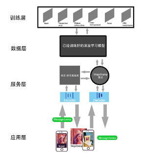
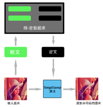
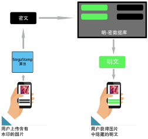
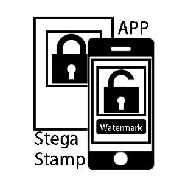

|  | |
| Ss watermark |
项目简介
随着现代数字技术和因特网的飞速发展，数字媒体得到了广泛的传播与应用，以数字化形式记录的多媒体信息为人们的工作和生活提供了极大的方便。与此同时，包含个人隐私、具有商业价值甚至涉及机密的内容也因数字化的记录形式无法得到相关的保护与监督。由此，如何既能保证方便高效信息传递，同时又能够解决信息传播过程中所带来的信息安全问题和版权保护问题成为了数字化时代的一个重要研究课题。在这个背景下，数字水印技术因其附加在多媒体信息上的隐蔽性和编码解码过程中的稳定性成为了目前学术界和工业界的研究热点。
算法技术方面，由于加密过程引入的是残差低频信号，传统数字水印技术往往无法兼顾隐蔽性与鲁棒性，同时地，由于需要控制加密过程引入的信道噪声，存储信息量亦受到了限制。对此，本项目采用了基于深度学习模型的StegaStamp技术，其在编码信息内容的隐蔽性与鲁棒性上取得了良好的平衡。但StegaStamp技术仍存在可存储信息少的缺点，对此，我们构建了明文密文编解码数据库实现使用较短字节长度的二进制编码密文存储加密信息明文，以适应现实水印存储应用需求。以上所承诺的效果在我们进行的大量测试中均得到了支撑验证。
交互系统方面。目前应用市场存在大量以“水印宝”为代表的显式交互系统，然而，以隐式数字水印技术为内核的信息加密交互系统仍存在空缺。对此，我们对算法技术进行包装，开发了集成交互式终端应用——Ss
watermark，且可通过我们的网站[27]进行下载。Ss
watermark的所有编解码过程应用云端服务器进行云端计算和处理以改善深度学习模型算法给用户终端带来的计算压力。同时，我们的明文密文编解码数据库在云端建立和维护，以保障用户的隐私安全和减轻终端设备的存储压力。
以上，基于StegaStamp技术的数字水印管理系统集成了数字水印的嵌入和提取功能，并拥有更具交互性的提取方法。通过进一步发展，可以成为打印图片的产权保护有力工具。如若在应用型与信息存储量上继续发展，利用其“图片中含有信息”的特性，将来甚至可以作为一种兼顾美观与安全的新型“二维码”供人们使用。
编解码过程
|  |  | |||||||||||||||
| 编码过程 | 解码过程 |
成果展示
交互系统
|  |
Ss watermark 隐式图像水印交互系统 Hongliang Niu, Teng Li, Kaike He [Application (apk)] / [code(model)] / [code(application)] |
演示视频
致谢
感谢合肥工业大学刘建老师在竞赛方向和开发过程中给予的指导和帮助。
{kind=link}
{kind=link}
{kind=link}